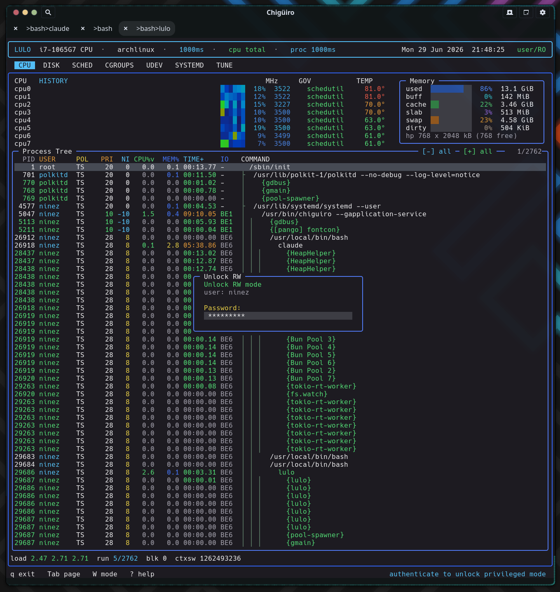

Lulo is three processes joined by two Unix-socket protocols and split across one privilege boundary, with two distinct escalation paths behind it: a session-scoped RW lease (authenticated by a polkit agent embedded inside the TUI) and a narrow pkexec helper for tunable writes.
The frontend lulo runs as the user and never writes a system file. The unprivileged session daemon lulod caches state and integrates with the desktop. The privileged daemon lulod-system runs as root and is the only component that applies scheduling policy, edits system files, or traces processes. Two separate escalation paths cross the privilege boundary.
Both boundaries are AF_UNIX / SOCK_STREAM sockets, but their trust models differ.
| Boundary | Path | Access control |
|---|---|---|
lulo <-> lulod |
$XDG_RUNTIME_DIR/lulod.sock (else /tmp/lulod-<uid>.sock) |
Filesystem only (the runtime dir is mode 0700); no peer-cred check |
lulod <-> lulod-system |
/run/lulod-system.sock (override LULOD_SYSTEM_SOCKET) |
chmod 0666, world-connectable; every accept reads SO_PEERCRED |
The session socket is per-user and unprivileged, so it simply trusts any local connector. The system socket is deliberately world-connectable – access control is not filesystem-based – because it is enforced per request via the kernel-supplied peer credentials plus the RW lease (below). When lulod binds its socket it does a small but careful thing: rather than blindly unlinking a stale socket, it connect-probes first, so it never deletes the socket of a daemon that is already running.
Both protocols are hand-rolled, field-by-field streaming serializations over the stream socket – there is no overall length prefix, so reader and writer must agree exactly on the schema for each message type. Each message opens with a three-uint32 header.
| Protocol | Magic | Version |
|---|---|---|
lulod |
0x4c554c4f (“LULO”) |
13 |
lulod-system |
0x4c555359 (“LUSY”) |
9 |
Requests carry magic, version, type; responses carry magic, version, int32 status (plus an error string when status is negative). A mismatched magic or version is a hard reject. The format is native-endian and ABI-tied (raw int32 / uint64 / enum casts, no htonl), which is correct for same-host Unix sockets but is a hard “local single-host only” constraint.
The request type tells the daemon what you want. The session daemon’s requests cover the five cached pages:
lulod: SYSTEMD_FULL/ACTIVE, TUNE_FULL/ACTIVE/SAVE_SNAPSHOT/SAVE_PRESET/APPLY_SELECTED,
SCHED_FULL/ACTIVE/RELOAD/APPLY_PRESET, CGROUPS_FULL/ACTIVE, UDEV_FULL/ACTIVE
The system daemon’s requests cover scheduling, editing, tracing, and auth:
lulod-system: SCHED_FULL, SCHED_RELOAD, SCHED_FOCUS_UPDATE, EDIT_BEGIN, EDIT_COMMIT,
EDIT_CANCEL, FILE_WRITE, FILE_DELETE, SCHED_APPLY_PRESET,
TRACE_BEGIN, TRACE_END, AUTH_UNLOCK, AUTH_LOCK
The session-daemon pages share one refresh pattern that keeps the UI cheap. Every page can ask for two granularities:
FULL returns the cached snapshot – the whole list – refreshed only when its TTL (mostly ~5s) has expired. This is the expensive gather (a systemd inventory, a cgroup walk), so it is throttled.ACTIVE re-renders just the selected item’s live detail against the cached list. This is what runs as you move the cursor, so the preview stays current without re-gathering everything.The request payload is the page’s UI state (cursors, scroll offsets, selection) so the daemon can compute the right “active” preview; the response is the domain snapshot. On the frontend side, a worker-thread backend holds the latest snapshot with a monotonic generation counter, and the render loop only repaints when the generation advances – so idle daemons cost zero frames. If the socket is missing, the backend will try to start lulod via its systemd user unit and then by forking it directly, throttled to once a second.
The frontend boots read-only. RW mode is a per-session unlock (toggled with Shift+W) that lets you perform privileged writes, edits, traces, and preset-applies through lulod-system. What makes it unusual is how the authentication happens: the password prompt is rendered inside the Notcurses TUI, because the frontend registers its own polkit agent.

The flow: pressing Shift+W spawns a worker thread that registers a PolkitAgentListener for the calling process (subject built from pid + start-time + uid) at object path /io/lulo/AuthAgent, and in parallel sends AUTH_UNLOCK to lulod-system. The system daemon asks polkit to authorize the action io.lulo.system.unlock-rw with user interaction allowed. polkit, needing a password, calls back into the frontend’s own registered agent – whose prompt, info, and error signals are marshalled into the TUI and drawn as an auth overlay. Keystrokes flow back as the polkit session response. On success the TUI sets rw_mode = 1; on failure it surfaces the polkit error.
Authorization on the daemon side is an in-memory lease table (16 slots) of {active, uid, pid, start_time}. On a successful unlock the daemon records a lease keyed on the kernel-reported peer uid and pid plus the process start_time read from /proc – which pins the lease to this exact process instance and defeats PID reuse. Leases live only in process memory, so restarting lulod-system drops them all and forces re-authentication.
Every mutating privileged request passes through require_rw_lease: root bypasses, otherwise the daemon re-reads the peer’s current start-time and demands an exact (uid, pid, start_time) match, returning EPERM if absent.
| Lease-gated (need RW) | Not lease-gated |
|---|---|
SCHED_APPLY_PRESET, EDIT_BEGIN, EDIT_COMMIT |
SCHED_FULL, SCHED_RELOAD (reads) |
FILE_WRITE, FILE_DELETE, TRACE_BEGIN |
SCHED_FOCUS_UPDATE, AUTH_LOCK |
EDIT_CANCEL, TRACE_END (ownership-checked instead) |
The frontend also has a path_requires_rw check (paths under /etc, /usr, /lib, /proc, /sys, /run/udev, /run/systemd) that blocks an action with “RO mode: Shift+W for root/RW” before it ever hits the wire – but that is purely advisory UX. The daemon’s lease guard is the authoritative gate and never trusts the frontend’s check.
Editing a system file abstracts the privilege away: the frontend tries the unprivileged path first and only escalates on failure.
access(path, W_OK) succeeds, the user can edit in place – no daemon involved. Otherwise the frontend sends EDIT_BEGIN. The daemon resolves the real path with realpath, checks it against an allowlist of prefixes (/etc/lulo/scheduler/, /proc/sys/kernel/sched_, /sys/devices/system/cpu/cpufreq/, the systemd dirs, /sys/fs/cgroup/, the udev dirs), opens the source O_RDONLY|O_NOFOLLOW, copies it into a mkstemp temp under /run/user/<uid>/lulo-edit/, and chowns that copy 0600 to the user. It returns a session id and the path to the user-owned copy.$VISUAL / $EDITOR. The user edits a private file they own.EDIT_COMMIT re-checks the session’s uid ownership and re-validates the scope, then writes back. For real files this is atomic: a same-directory mkstemp, content copy, mode/owner preserved, fsync, then rename() over the original. For kernel pseudo-files (cgroup controllers, sched tunables) it writes in place, since atomic rename is not meaningful there. O_NOFOLLOW is used throughout to block symlink races, and committing a scheduler file triggers a config reload + rescan.EDIT_CANCEL (ownership-checked, not lease-gated) cleans up the copy and meta. Direct FILE_WRITE / FILE_DELETE follow the same realpath-and-allowlist discipline for editor-less changes.
The s key on the CPU page starts a trace of the selected process. It does not call ptrace directly – lulod-system (as root) forks and execs the system strace binary:
strace -f -s 256 -yy -ttt -p <pid>
Before spawning, it pre-flights: the PID must exist (kill(pid,0)), readlink(/proc/<pid>/exe) must succeed (rejecting kernel threads), and /usr/bin/strace must be executable. Output is written to /run/user/<uid>/lulo-trace/<session_id>.log, created 0600 and chowned to the requesting user so only they can read it. The session_id is strictly validated to [A-Za-z0-9._-] before any path interpolation, which closes off path traversal, and a root-only meta file records the owning uid, child pid, target pid, and output path. TRACE_END enforces that the requester owns the session (so the owner can always stop their own trace), then SIGTERM → grace → SIGKILL and unlinks the files. Privilege is required because attaching to an arbitrary process needs CAP_SYS_PTRACE; routing it through the root daemon and chowning the log to the user is what makes it both possible and readable.
Tunable application (the Tune page’s apply) uses a separate, simpler escalation route, independent of the lease machinery. lulod builds a small plan (a lulo-admin-tune-v1 header plus path<TAB>value lines) and runs pkexec lulo-admin apply-tune, piping the plan to the helper on stdin. The lulo-admin helper refuses to run unless it is root and the verb is apply-tune, and it validates every path through realpath + a prefix allowlist limited to /proc/sys, /sys, and /sys/fs/cgroup before writing. polkit gates it via the io.lulo.admin.pkexec.apply-tune action.
So there are two polkit actions and two privilege models by design: the lease path (broad, session-stateful, for scheduler/edit/trace) and the pkexec path (narrow, stateless, for tunable writes only).
The design concentrates privilege and validates aggressively at the boundary.
SO_PEERCRED on every accept; the frontend cannot lie about its uid or pid.(uid, pid, start_time), so a recycled PID can never inherit another process’s authorization.realpath before every allowlist check, O_NOFOLLOW everywhere, same-directory mkstemp+rename with preserved owner/mode, and scope re-validation at commit time.path_requires_rw is convenience only; the daemon re-checks the lease independently.Two properties are worth flagging for maintainers. The system socket is intentionally world-connectable (0666), so security rests entirely on the per-request lease and ownership checks – a new request handler that forgets require_rw_lease would be an instant privilege hole. And the deserializers do not cap string/array lengths, which is low-risk on a local peer-checked socket but means a hostile local process could trigger large allocations; the version field is the only compatibility guard.
SCHED_FOCUS_UPDATE across the boundary